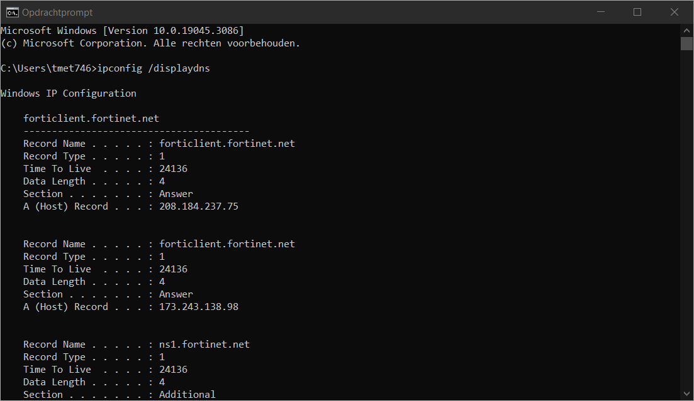

Zoals je weet gebeurt de aflevering van pakketten op basis van een source en destination IP adres. Wil je data uitwisselen met een bepaalde host dan heb je deze zijn IP adres nodig.
Een IPv4 adres wordt genoteerd in dotted decimal notation en ziet er bijvoorbeeld als volgt uit: 84.56.123.36 . Een IPv6 adres genoteerd wordt in hexadecimale notatie en er bijvoorbeeld als volgt uitziet: 2001:0db8:85a3:0000:1319:8a2e:0370:7344
Op een host kan een applicatie zoals een webserver draaien. Wanneer mensen de website op die host willen bezoeken dan zou men in de adresbalk het IPv4 of IPv6 adres moeten invullen. Dit is natuurlijk een zeer onpraktische manier van werken omdat al deze adressen onthouden zouden moeten worden én het veel werk is om deze in te vullen. In sommige gevallen veranderen deze IP adressen zelfs regelmatig waardoor het helemaal onbegonnen werk wordt.
Om deze taak te vereenvoudigen wordt gebruik gemaakt van DNS. DNS laat toe om een hostnaam (bijvoorbeeld hogent.be) om te zetten naar een IP adres (bijvoorbeeld 84.56.123.36). Dit wordt ook wel een forward lookup genoemd. Ook het omgekeerde is mogelijk, dit is dan een reverse lookup.
DNS steunt op twee peilers:
De DNS servers die actief zijn op het internet worden meestal beheerd door de telecomoperatoren. Enkel klanten van die operator kunnen dan een forward of reverse lookup uitvoeren op een bepaalde DNS server. Sommige DNS servers zijn ook publiek toegankelijk. Zo heeft Cloudflare een DNS server op 1.1.1.1 en Google heeft een server op 8.8.8.8 .
Hoe sneller de forward lookup gebeurt op een DNS server, hoe sneller je kan data uitwisselen. Om deze reden wordt soms afgeweken van de standaard DNS server die je toegewezen krijgt van de internet provider. Maar er is natuurlijk ook een keerzijde aan de medaille, gebruik je bijvoorbeeld de DNS server van Google dan weet men exact welke websites je bezoekt. Je geeft dan een stukje van je privacy op.
Wanneer je een website bezoekt in een browser en je de hostnaam (bijvoorbeeld https://www.hogent.be) invult in de adresbalk wordt eerst nagegaan als dit adres nog niet bestaat in de lokale DNS tabel op jouw eigen computer. Deze tabel wordt ook de DNS cache genoemd.
Je kan jouw DNS cache tabel raadplegen door in een commandovenster de opdracht ipconfig /displaydns in te geven. Je ziet dan bij iedere hostnaam een bijhorend IP adres.

Achterliggend surf je dus niet naar een domeinnaam maar wel naar een IP adres.